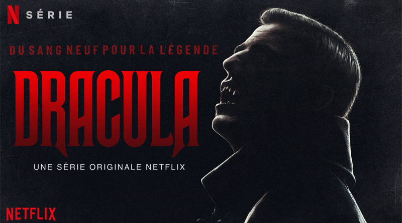

<ion-content [fullscreen]="true">
  <ion-header>
    <ion-toolbar color="netflix-dark">
      <ion-title>
        
      </ion-title>
      <ion-buttons slot="end">
        <ion-button>
          <ion-icon slot="icon-only" name="tv-outline"></ion-icon>
        </ion-button>
      </ion-buttons>
    </ion-toolbar>
  </ion-header>

  
  <ion-button expand="full" color="netflix-dark"
    >Regarder maintenant</ion-button
  >
</ion-content>
